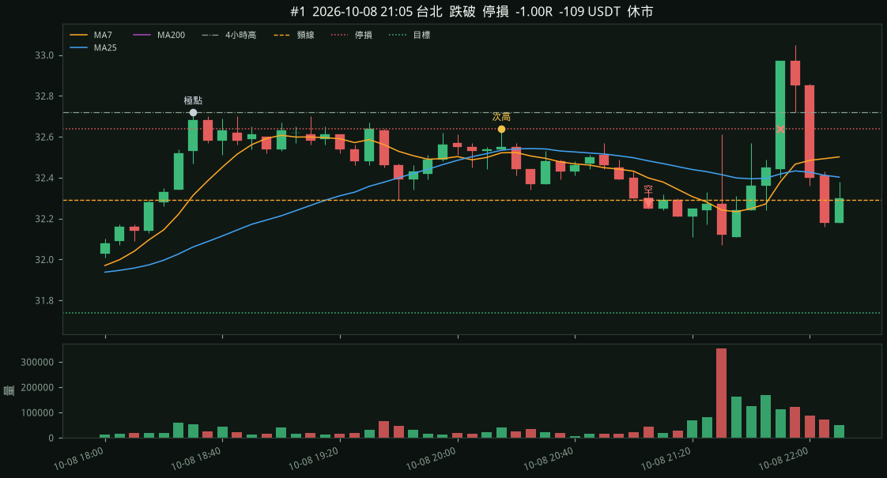
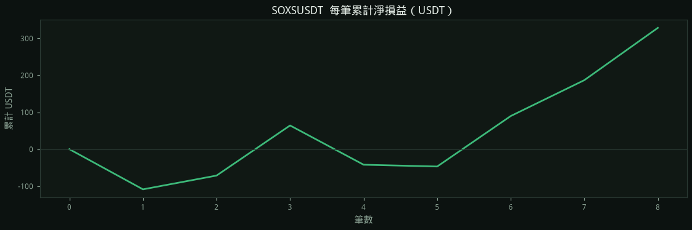
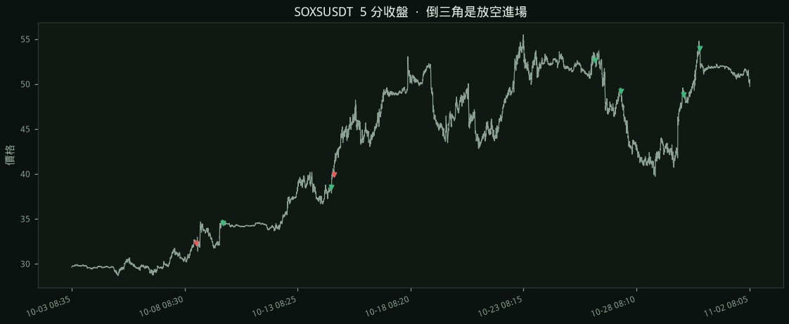
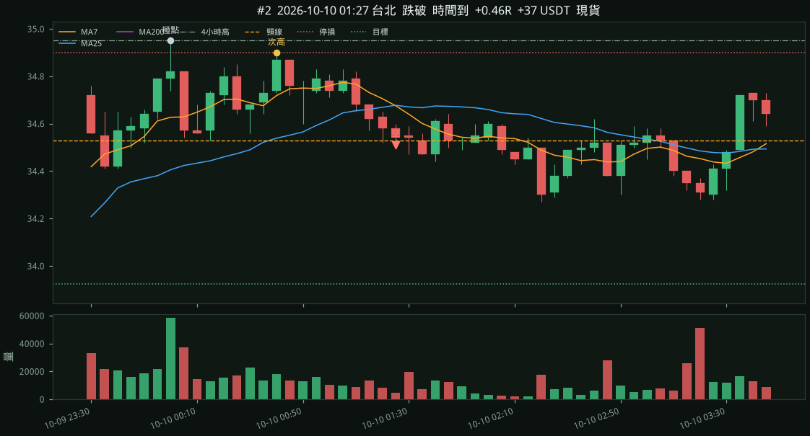
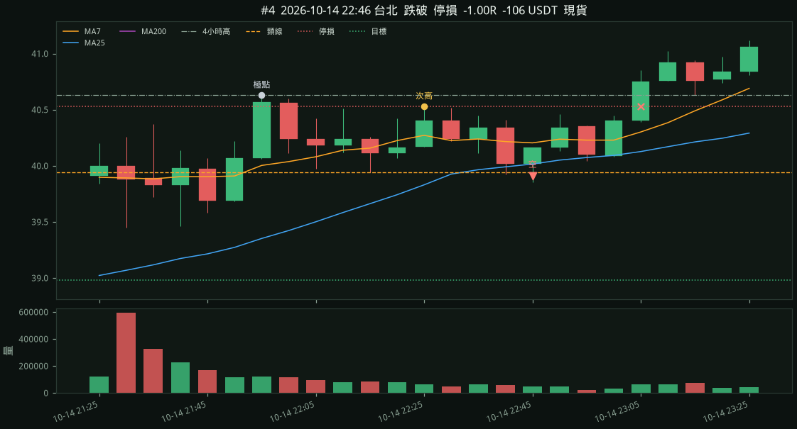
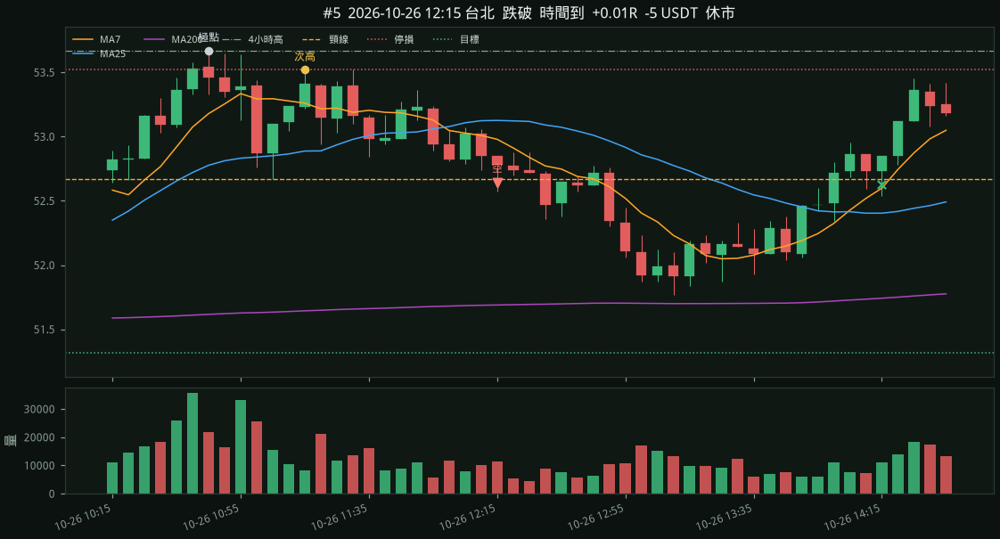
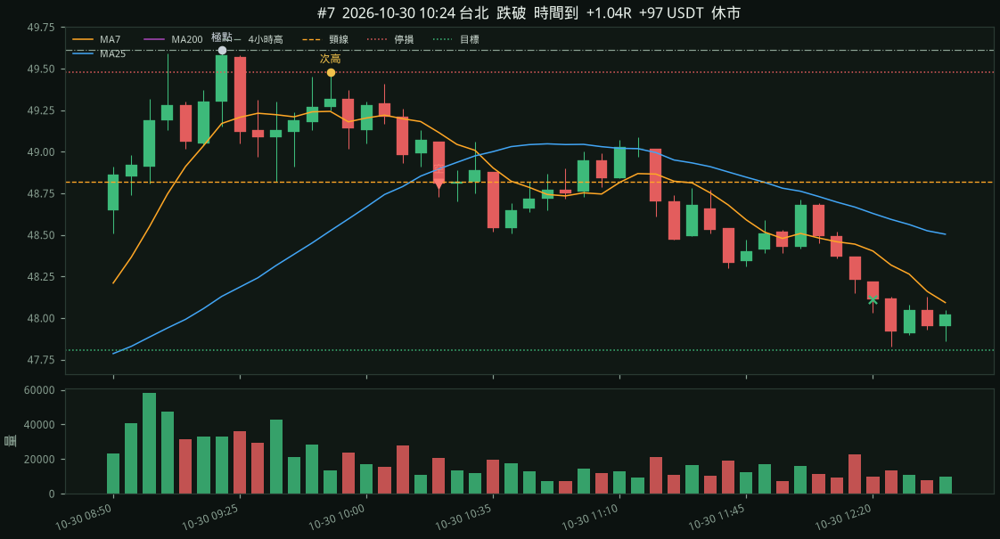
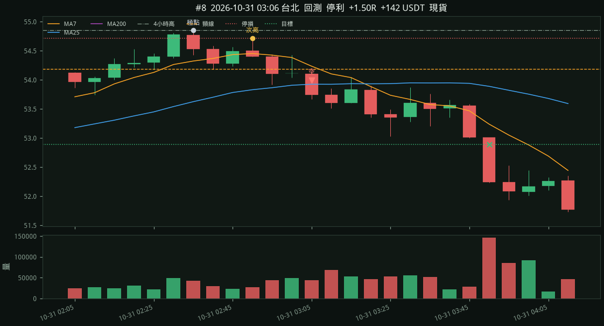

#1 · 跌破
2026-10-08 21:05 台北 → 2026-10-08 21:52 台北
-109 USDT
進場 32.2800 停損 32.6400 目標 31.7400 出場 32.6400 停損 -1.00R 極點 32.7200 頸線 32.2900 較低高點 32.6400 四小時高點 32.7200 張數 277 毛損益 -99.72 手續費 8.99 淨損益 -108.71 USDT

2026-10-03 08:35 台北 → 2026-11-02 08:25 台北
5 分定極點、較低高點、頸線。1 分收盤跌破頸線、收在 MA25 下、量能回到前 10 根均量才放空。每筆風險預算 100 USDT。單邊費率 0.050%，進出各計一次。張數是整數。
毛損益 +401 USDT，手續費 72，淨值最大回撤 -111 USDT。
停利 3 筆 +4.5R · 停損 2 筆 -2.0R · 時間到 3 筆 +1.5R
現貨時段 3 筆、勝率 67%、+73 USDT。休市 5 筆、勝率 80%、+256 USDT。


進場 32.2800 停損 32.6400 目標 31.7400 出場 32.6400 停損 -1.00R 極點 32.7200 頸線 32.2900 較低高點 32.6400 四小時高點 32.7200 張數 277 毛損益 -99.72 手續費 8.99 淨損益 -108.71 USDT

進場 34.5100 停損 34.9000 目標 33.9250 出場 34.3300 時間到 +0.46R 極點 34.9500 頸線 34.5300 較低高點 34.9000 四小時高點 34.9500 張數 256 毛損益 +46.08 手續費 8.81 淨損益 +37.27 USDT

進場 38.4900 停損 38.7600 目標 38.0850 出場 38.0850 停利 +1.50R 極點 38.9200 頸線 38.5100 較低高點 38.7600 四小時高點 38.9200 張數 370 毛損益 +149.85 手續費 14.17 淨損益 +135.68 USDT
進場 39.9100 停損 40.5300 目標 38.9800 出場 40.5300 停損 -1.00R 極點 40.6300 頸線 39.9400 較低高點 40.5300 四小時高點 40.6300 張數 161 毛損益 -99.82 手續費 6.48 淨損益 -106.30 USDT

進場 52.6400 停損 53.5200 目標 51.3200 出場 52.6300 時間到 +0.01R 極點 53.6700 頸線 52.6700 較低高點 53.5200 四小時高點 53.6700 張數 113 毛損益 +1.13 手續費 5.95 淨損益 -4.82 USDT

進場 49.1700 停損 49.5400 目標 48.6150 出場 48.6150 停利 +1.50R 極點 49.7700 頸線 49.3300 較低高點 49.5400 四小時高點 49.7700 張數 270 毛損益 +149.85 手續費 13.20 淨損益 +136.65 USDT
進場 48.8100 停損 49.4800 目標 47.8050 出場 48.1100 時間到 +1.04R 極點 49.6100 頸線 48.8200 較低高點 49.4800 四小時高點 49.6100 張數 149 毛損益 +104.30 手續費 7.22 淨損益 +97.08 USDT

進場 53.9900 停損 54.7200 目標 52.8950 出場 52.8950 停利 +1.50R 極點 54.8500 頸線 54.1900 較低高點 54.7200 四小時高點 54.8500 張數 136 毛損益 +148.92 手續費 7.27 淨損益 +141.65 USDT
